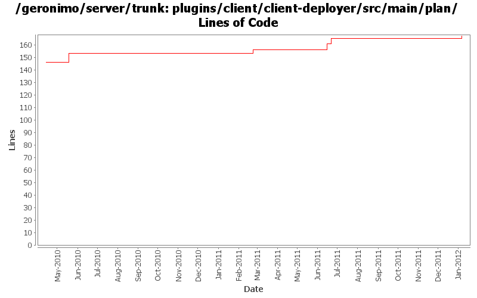

[root]/plugins/client/client-deployer/src/main/plan

| Author | Changes | Lines of Code | Lines per Change |
|---|---|---|---|
| Totals | 10 (100.0%) | 23 (100.0%) | 2.3 |
| genspring | 4 (40.0%) | 12 (52.2%) | 3.0 |
| djencks | 4 (40.0%) | 11 (47.8%) | 2.7 |
| gawor | 2 (20.0%) | 0 (0.0%) | 0.0 |
GERONIMO-6251 determine if server is actually fully started, provide access to DependencyManager for osgi metadata purposes
2 lines of code changed in 1 file:
GERONIMO-5066 Use naming Reference to set up Datasources and use them to get global scope datasources from server to app client
1 lines of code changed in 1 file:
GERONIMO-6018 Geronimo does not support @ManagedBean defined in app client module.
1, added a openejb-client module to only contain openejb system and managed container.
2, add a ClientEJBBuiler so that client-deployer could use it to build @ManagedBean in app client module.
3, updated EJBModuleBuilder and AppClientModuleBuilder to do the ejb in clientmodule deployment work.
4 lines of code changed in 1 file:
GERONIMO-6008 use openejb remote jndi system in client container to do global jndi lookup.
see OPENEJB-1596 for openejb side changes.
2 lines of code changed in 1 file:
adding DataSourceBuilder to client deployer.
3 lines of code changed in 1 file:
PU in app-client module need ValidatorFactory GBean get generated. Adding BValModuleBuilderExtension to client-deployer to fix this.
3 lines of code changed in 1 file:
Only look in module and parents for persistence units. Only look in module for persistence units for refs. Combine persistence unit and context ref builders.
1 lines of code changed in 1 file:
GERONIMO-5025 support for jndi configuration in application.xml (part 2)
7 lines of code changed in 1 file:
GERONIMO-5253: Bind module name into JNDI (java:module/ModuleName). Also, some app client fixes
0 lines of code changed in 2 files: